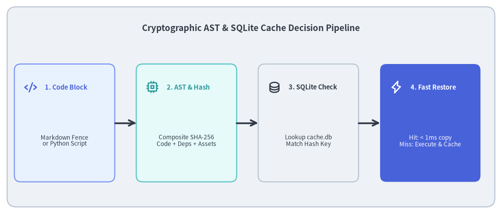
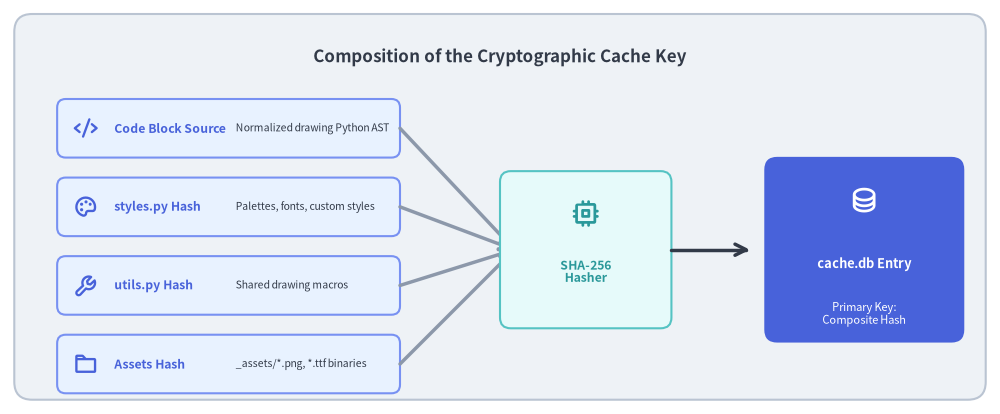

SQLite Cache Engine & AST Analysis
A major friction point with "Documentation as Code" is compilation speed. If compiling an 80-page documentation site with 400 diagrams requires re-executing every Python script from scratch, build times exceed several minutes, destroying the rapid feedback loop required for interactive documentation authoring.
Drawlib solves this via a cryptographic caching engine (_builder/_common/cache.py) backed by an embedded SQLite database (.drawlib/cache.db), reducing incremental rebuild times to < 1ms per diagram.

Source Code
from drawlib.canvas import save, setup
from drawlib.icons import phosphor
from drawlib.lines import line
from drawlib.shapes import rectangle
from drawlib.styles import Styles
from drawlib.text import text
setup(width=140, height=60)
rectangle((70, 30), width=136, height=56, style=Styles.Neutral.patch(shape_r=2.5))
text(
(70, 52),
"Cryptographic AST & SQLite Cache Decision Pipeline",
style=Styles.DarkBold.patch(text_size=12.2),
)
nodes = [
(18, "1. Code Block", "Markdown Fence\nor Python Script", phosphor.code, Styles.PrimaryNeutral, Styles.PrimaryBold),
(52, "2. AST & Hash", "Composite SHA-256\nCode + Deps + Assets", phosphor.cpu, Styles.SecondaryNeutral, Styles.SecondaryBold),
(86, "3. SQLite Check", "Lookup cache.db\nMatch Hash Key", phosphor.database, Styles.Neutral, Styles.DarkBold),
(120, "4. Fast Restore", "Hit: < 1ms copy\nMiss: Execute & Cache", phosphor.lightning, Styles.PrimaryFlat, Styles.WhiteBold),
]
for x, title, desc, icon_func, card_style, icon_style in nodes:
rectangle((x, 25.5), width=28, height=33, style=card_style.patch(shape_r=1.8))
icon_func((x - 9.5, 35.5), width=3.6, style=icon_style)
text((x - 5.5, 35.5), title, style=icon_style.patch(halign="left", text_size=9.2))
sub_style = Styles.White if card_style == Styles.PrimaryFlat else Styles.Dark
text((x, 20.5), desc, style=sub_style.patch(text_size=8.5))
for i in range(3):
x_from = nodes[i][0] + 14.0
x_to = nodes[i + 1][0] - 14.0
line((x_from, 25.5), (x_to, 25.5), arrow_head="->", style=Styles.DarkBold)
save()
1. Concept: Cryptographic Content Hashing vs. Timestamp Invalidation
Traditional build tools (like make or file mtime watchers) rely on filesystem modification timestamps. This approach fails catastrophically for embedded documentation diagrams:
- Editing a single typographical error in a Markdown file updates the file's timestamp, which would unnecessarily force the re-rendering of all 10 diagrams on that page.
- Conversely, modifying an external imported theme (
styles.py) might not touch the Markdown file at all, leaving diagrams stale.
The Drawlib Solution: Multi-Factor Composite Hashing
Drawlib ignores filesystem timestamps entirely. Instead, it computes a cryptographic SHA-256 composite hash for every diagram block based on its true dependency tree:

Source Code
from drawlib.canvas import save, setup
from drawlib.icons import phosphor
from drawlib.lines import line
from drawlib.shapes import rectangle
from drawlib.styles import Styles
from drawlib.text import text
setup(width=140, height=58)
rectangle((70, 29), width=136, height=54, style=Styles.Neutral.patch(shape_r=2.5))
text(
(70, 50),
"Composition of the Cryptographic Cache Key",
style=Styles.DarkBold.patch(text_size=12.2),
)
# 4 Inputs on Left (X: 32)
inputs = [
(38, "Code Block Source", "Normalized drawing Python AST", phosphor.code),
(27, "styles.py Hash", "Palettes, fonts, custom styles", phosphor.palette),
(16, "utils.py Hash", "Shared drawing macros", phosphor.wrench),
(5, "Assets Hash", "_assets/*.png, *.ttf binaries", phosphor.folder),
]
for y, title, desc, icon_func in inputs:
rectangle((32, y + 2), width=48, height=8.2, style=Styles.PrimaryNeutral.patch(shape_r=1.2))
icon_func((12, y + 2), width=3.4, style=Styles.PrimaryBold)
text((16, y + 2), title, style=Styles.PrimaryBold.patch(halign="left", text_size=8.8))
text((33, y + 2), desc, style=Styles.Dark.patch(halign="left", text_size=7.5))
line((56, y + 2), (72, 23), arrow_head="->", style=Styles.MutedBold)
# Center Hashing Function
rectangle((82, 23), width=24, height=22, style=Styles.SecondaryNeutral.patch(shape_r=1.5))
phosphor.cpu((82, 28), width=4.0, style=Styles.SecondaryBold)
text((82, 20), "SHA-256\nHasher", style=Styles.SecondaryBold.patch(text_size=8.8))
line((94, 23), (105, 23), arrow_head="->", style=Styles.DarkBold)
# Output Cache Key & SQLite Entry
rectangle((121, 23), width=28, height=26, style=Styles.PrimaryFlat.patch(shape_r=1.8))
phosphor.database((121, 30), width=4.0, style=Styles.WhiteBold)
text((121, 21), "cache.db Entry", style=Styles.WhiteBold.patch(text_size=9.2))
text((121, 14), "Primary Key:\nComposite Hash", style=Styles.White.patch(text_size=8.0))
save()
2. Positioning: Cache Engine in the Compilation Pipeline
The cache engine operates transparently between the Markdown block extractor and the drawing canvas:
- Extraction: When
doc_builderencounters adrawlibblock,DrawlibBlockProcessorextracts the Python code and evaluates cache viability. - Static AST Analysis: Before executing any code,
image_builder.pyparses the AST to statically inspectcanvas.save("...")invocations, detecting output file name conflicts across multiple documents without execution overhead. - Dependency Hashing:
_builder/_common/cache.pycomputes SHA-256 hashes for:- The normalized drawing code.
- Global configuration files (
styles.pyandutils.py). - Any local binary assets (
_assets/*.png,*.ttf) discovered via string literal inspection.
- Database Query: Queries
.drawlib/cache.dbusing the computed composite key.- Cache Hit: Restores pre-rendered binary blobs directly from SQLite in < 1ms.
- Cache Miss: Executes the Python block in an in-process sandbox, saves the generated images, and persists all format blobs into SQLite.
3. Details: SQLite Database Schema & Invalidation
3.1. Database Schema & Multi-Blob Storage
The cache database resides in .drawlib/cache.db with Write-Ahead Logging (PRAGMA journal_mode=WAL;) enabled for high-concurrency performance:
CREATE TABLE IF NOT EXISTS image_cache (
cache_key TEXT PRIMARY KEY,
code_hash TEXT NOT NULL,
config_hash TEXT NOT NULL,
png_blob BLOB,
png_grid_blob BLOB,
webp_blob BLOB,
webp_grid_blob BLOB,
total_size_bytes INTEGER NOT NULL,
created_at TEXT NOT NULL,
last_accessed_at TEXT NOT NULL
);
CREATE INDEX IF NOT EXISTS idx_image_cache_accessed ON image_cache (last_accessed_at);
CREATE TABLE IF NOT EXISTS cache_meta (
key TEXT PRIMARY KEY,
value TEXT NOT NULL
);
Dual Normal & Coordinate Grid Blobs
To support instantaneous previewing with coordinate grids (uv run drawlib show page.md block.png -g), Drawlib stores four distinct blobs per cache key:
png_blob: Standard production raster image.png_grid_blob: Raster image with 10-unit/5-unit coordinate overlay grid for authoring.webp_blob: Compressed modern web asset.webp_grid_blob: Coordinate grid overlay compressed web asset.
3.2. Automatic 1 GiB LRU Eviction
To prevent cache bloat in large repositories:
total_size_bytestracks the exact byte footprint of each record.- When total cache size exceeds 1 GiB (
1,073,741,824 bytes),BuildImageCachetriggers an automatic LRU (Least Recently Used) prune, deleting the oldest 50% of entries sorted bylast_accessed_at.
3.3. Cache Invalidation Triggers
A diagram is invalidated and re-rendered only when:
- The Python code within the code fence is modified.
- Target canvas dimensions (
width,height, ordpi) change. styles.pyorutils.pyis edited.- Any referenced asset file in
_assets/(e.g. a company logo or font file) is changed.
3.4. Cache Management CLI
Developers and CI runners can inspect and prune the cache via the CLI:
uv run drawlib cache list # Display cache statistics and total stored assets
uv run drawlib cache clear --images # Purge all rendered diagram blobs
uv run drawlib cache clear --all # Complete reset of database and downloaded assets
Next, proceed to Chapter 3: Primitives & Backends.